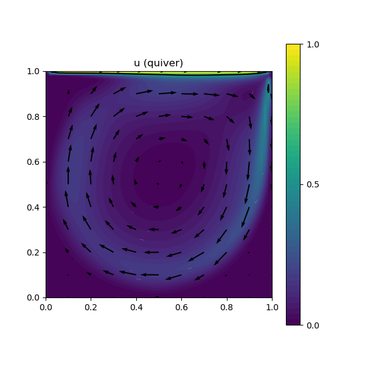

222 : Navier-Stokes Lid-driven cavity + Anderson Acceleration
This example solves the lid-driven cavity problem where one seeks a velocity $\mathbf{u}$ and pressure $\mathbf{p}$ of the incompressible Navier–Stokes problem
\[\begin{aligned} - \mu \Delta \mathbf{u} + (\mathbf{u} \cdot \nabla) \mathbf{u} + \nabla p & = 0\\ \mathrm{div}(u) & = 0 \end{aligned}\]
where $\mathbf{u} = (1,0)$ along the top boundary of a square domain.
For small viscosities (where a Newton and a classical Picard iteration do not converge anymore), Anderson acceleration might help which can be tested with this script. Here, we use Anderson acceleration until the residual is small enough for the Newton to take over.
module Example222_NavierStokesAnderson2D
using GradientRobustMultiPhysics
using ExtendableGrids
using GridVisualize
using Printf
# everything is wrapped in a main function
function main(; verbosity = 0, Plotter = nothing, μ = 5e-4, anderson_iterations = 10, target_residual = 1e-12, maxiterations = 50, switch_to_newton_tolerance = 1e-4)
# set log level
set_verbosity(verbosity)
# grid
xgrid = uniform_refine(grid_unitsquare(Triangle2D), 5);
# finite element type
FETypes = [H1P2{2,2}, H1P1{1}] # Taylor--Hood
# load Navier-Stokes problem prototype and assign data
Problem = IncompressibleNavierStokesProblem(2; viscosity = μ, nonlinear = true, auto_newton = false, store = false)
add_boundarydata!(Problem, 1, [1,2,4], HomogeneousDirichletBoundary)
add_boundarydata!(Problem, 1, [3], BestapproxDirichletBoundary; data = DataFunction([1,0]))
@show Problem
# generate FESpaces
FES = [FESpace{FETypes[1]}(xgrid), FESpace{FETypes[2]}(xgrid)]
Solution = FEVector(["u_h", "p_h"],FES)
# solve with anderson iterations until 1e-4
solve!(Solution, Problem; anderson_iterations = anderson_iterations, anderson_metric = "l2", anderson_unknowns = [1], maxiterations = maxiterations, target_residual = switch_to_newton_tolerance, show_statistics = true)
# solve rest with Newton
Problem = IncompressibleNavierStokesProblem(2; viscosity = μ, nonlinear = true, auto_newton = true, store = true)
add_boundarydata!(Problem, 1, [1,2,4], HomogeneousDirichletBoundary)
add_boundarydata!(Problem, 1, [3], BestapproxDirichletBoundary; data = DataFunction([1,0]))
@show Problem
solve!(Solution, Problem; anderson_iterations = anderson_iterations, maxiterations = maxiterations, target_residual = target_residual, show_statistics = true)
# plot
p = GridVisualizer(; Plotter = Plotter, layout = (1,2), clear = true, resolution = (1000,500))
scalarplot!(p[1,1],xgrid,view(nodevalues(Solution[1]; abs = true),1,:), levels = 3)
vectorplot!(p[1,1],xgrid,evaluate(PointEvaluator(Solution[1], Identity)), spacing = 0.1, clear = false, title = "u_h (abs + quiver)")
scalarplot!(p[1,2],xgrid,view(nodevalues(Solution[2]),1,:), levels = 11, title = "p_h")
end
endThis page was generated using Literate.jl.
Default output:
julia> Example222_NavierStokesAnderson2D.main()
PDE-DESCRIPTION
===============
system name = incompressible Navier-Stokes-Problem
id | unknown name / equation name
[1] | u / momentum equation
[2] | p / incompressibility constraint
LHS block | PDEOperator(s)
[1,1] | 0.0005 (∇u,∇v) (APT = SymmetricBilinearForm, AT = ON_CELLS, regions = [0])
| ((id(a) ⋅ ∇) u, id(v)) (APT = TrilinearForm, AT = ON_CELLS, regions = [0])
[1,2] | (div(v),q) (APT = BilinearForm, AT = ON_CELLS, regions = [0])
[2,1] | none
[2,2] | none
RHS block | PDEOperator(s)
[1] | none
[2] | none
BoundaryOperator[1] : BestapproxDirichletBoundary -> [3]
HomogeneousDirichletBoundary -> [1, 2, 4]
BoundaryOperator[2] :
GlobalConstraints[1] : Mean[2] != 0
Problem =
ITERATION | LSRESIDUAL | NLRESIDUAL | TIME ASSEMBLY/SOLVE/TOTAL (s)
-----------------------------------------------------------------------
1 | 2.343474e-17 | 8.063241e-03 | 2.19e-01/4.57e-01/6.79e-01
2 | 2.409920e-17 | 4.186558e-03 | 2.19e-01/4.99e-01/7.22e-01
3 | 3.214444e-17 | 2.062310e-03 | 2.19e-01/4.50e-01/6.73e-01
4 | 2.859198e-17 | 6.651686e-04 | 2.19e-01/2.54e-01/4.77e-01
5 | 2.982468e-17 | 5.562696e-04 | 2.19e-01/2.64e-01/4.89e-01
6 | 3.017390e-17 | 3.504737e-04 | 2.19e-01/2.54e-01/4.79e-01
7 | 2.917963e-17 | 3.225783e-04 | 2.21e-01/2.64e-01/4.91e-01
8 | 2.963707e-17 | 1.990759e-04 | 2.19e-01/2.59e-01/4.85e-01
9 | 2.977928e-17 | 8.282842e-05 | 2.19e-01/2.59e-01/4.86e-01
PDE-DESCRIPTION
===============
system name = incompressible Navier-Stokes-Problem
id | unknown name / equation name
[1] | u / momentum equation
[2] | p / incompressibility constraint
LHS block | PDEOperator(s)
[1,1] | 0.0005 (∇u,∇v) (APT = SymmetricBilinearForm, AT = ON_CELLS, regions = [0])
| ((id(u) ⋅ ∇) u, id(v)) [AD-Newton] [∂u] (APT = NonlinearForm, AT = ON_CELLS, regions = [0])
[1,2] | (div(v),q) (APT = BilinearForm, AT = ON_CELLS, regions = [0])
[2,1] | none
[2,2] | none
RHS block | PDEOperator(s)
[1] | ((id(u) ⋅ ∇) u, id(v)) [AD-Newton] (APT = NonlinearForm, AT = ON_CELLS, regions = [0])
[2] | none
BoundaryOperator[1] : BestapproxDirichletBoundary -> [3]
HomogeneousDirichletBoundary -> [1, 2, 4]
BoundaryOperator[2] :
GlobalConstraints[1] : Mean[2] != 0
Problem =
ITERATION | LSRESIDUAL | NLRESIDUAL | TIME ASSEMBLY/SOLVE/TOTAL (s)
-----------------------------------------------------------------------
1 | 2.995708e-17 | 8.735238e-07 | 4.71e-01/3.22e-01/7.97e-01
2 | 2.850040e-17 | 4.117803e-10 | 4.83e-01/2.73e-01/7.60e-01
3 | 2.827752e-17 | 6.586375e-16 | 4.77e-01/2.60e-01/7.41e-01
